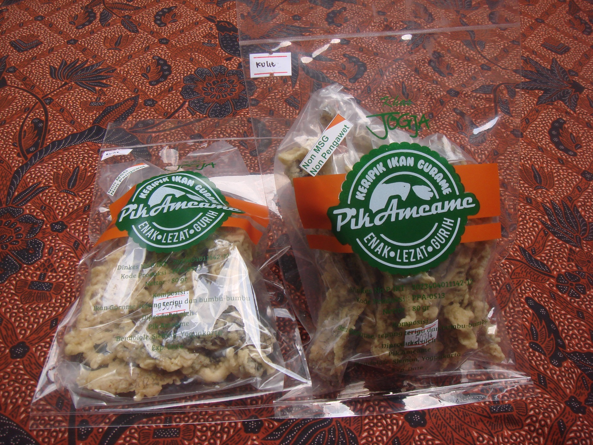
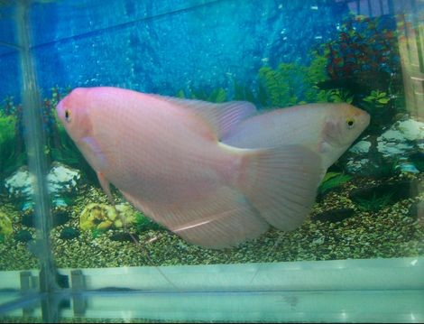
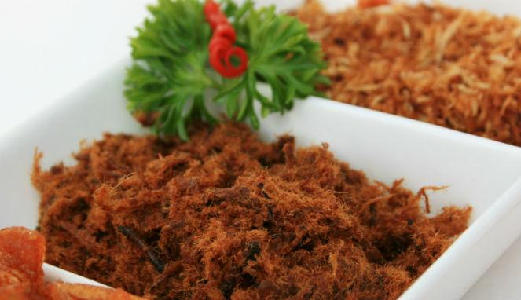

Ikan gurami terutama digemari sebagai ikan konsumsi. Dagingnya padat, durinya besar-besar, rasanya enak dan gurih. Gurami hampir selalu tersedia di restoran, untuk dijadikan sebagai macam masakan terutama gurami bakar dan gurami asam-manis.

Keripik Ikan Gurame
Salah satu alternatif lagi bagi Anda yang gemar olahan ikan yang kaya akan gizi dan protein. Keripik Daging Ikan Gurame. Ini merupakan olahan keripik yang berasal dari Sleman Yogyakarta. Tentunya ini akan menjadi makanan spesial bagi para penggemar ikan air tawar.
Tidak diragukan lagi bahwa protein yang terkandung dalam ikan gurame adalah 19%. Dan ini lebih tinggi dibandingkan dengan ikan air tawar lainnya. Dan protein yang terkandung di dalam ikan, lebih banyak manfaat yang dapat diambil dari pada yang terdapat di dalam daging. Protein dalam ikan gurame bermanfaat untuk membantu pertumbuhan anak atau balita, mencegah kangker, mencegang penyakit kulit, dan mengganti sel-sel rusak.

Ikan Hias
Ikan gurami terutama digemari sebagai ikan konsumsi. Dagingnya padat, durinya besar-besar, rasanya enak dan gurih. Gurami hampir selalu tersedia di restoran, untuk dijadikan sebagai macam masakan terutama gurami bakar dan gurami asam-manis.

Abon Ikan Gurame
Malas mengkonsumsi ikan air tawar? Sangat disayangkan apabila Anda malas makan ikan air tawar dan lebih memilih daging ayam, kambing atau sapi. Karena menurut penelitian protein yang terkandung di dalam ikan air tawar sangatlah baik untuk menjaga kesehatan tubuh kita. Salah satunya protein yang terdapat pada ikan gurame.
Jumlah protein yang terkandung dalam ikan gurame adalah 19%. Dan ini lebih tinggi dibandingkan dengan ikan air tawar lainnya. Dan protein yang terkandung di dalam ikan, lebih banyak manfaat yang dapat diambil dari pada yang terdapat di dalam daging. Protein dalam ikan gurame bermanfaat untuk membantu pertumbuhan anak atau balita, mencegah kangker, mencegang penyakit kulit, dan mengganti sel-sel rusak.